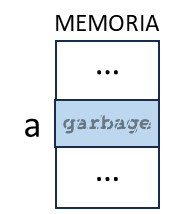
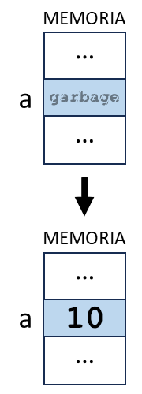
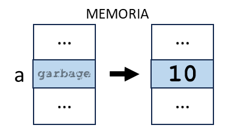
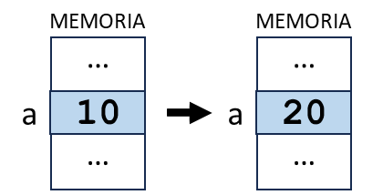

Utilización de variables en un programa
La utilización de una variable en un programa es cuando una instrucción de código accede a la variable para realizar alguna operación o acción con ella.
Sintaxis
La sintaxis se refiere a las reglas y convenciones que se deben seguir al declarar, inicializar y utilizar variables en un lenguaje de programación específico. Estas reglas pueden variar de un lenguaje a otro, pero generalmente incluyen lo siguiente:
Declaración de variables: La sintaxis para declarar una variable generalmente incluye un tipo de dato y un identificador.
Por ejemplo, en Java, puedes declarar una variable de tipo entero llamada a de la siguiente manera:
Inicialización de variables: La inicialización se refiere a la asignación de un valor inicial a una variable en el momento de la declaración.
Por ejemplo, en Python, puedes declarar e inicializar una variable a con el valor 10 de la siguiente manera:
En algunos lenguajes de programación es posible declarar e inicializar una variable en la misma línea de código.
Por ejemplo, podemos unir la declaración y la inicialización que hemos visto en una sola línea de código en Java o C++:
Asignación de variables: La asignación se refiere a cambiar el valor de una variable ya declarada.
Por ejemplo, en JavaScript, puedes cambiar el valor de una variable a con un valor almacenado de 10 a otro valor de 20 de la siguiente manera:
Uso de variables: Las variables se pueden utilizar en expresiones y sentencias. La sintaxis para utilizar una variable depende de la operación que se esté realizando. Por ejemplo, en C++, puedes utilizar la variable a en una operación de suma de la siguiente manera:
Como puedes observar en cada caso, la sintaxis parece ser la misma. Es decir, la misma manera de escribir. Pero ten cuidado porque no siempre ocurre esto.
¡Para recordar!
Es importante seguir la sintaxis correcta para evitar errores de compilación y de tiempo de ejecución.
Dependiendo del lenguaje, es posible declarar, inicializar o asignar dos o más variables en una misma línea de código, separadas por una coma:
int num_1, num_2, num_3; // Declaración
int num_1 = 5, num_2 = 10, num_3 = 20; // Declaración e inicialización
int num_1, num_2, num_3; // Declaración
num_1 = 5, num_2 = 10, num_3 = 20; // Inicialización
num_1 = 15, num_2 = 20, num_3 = 30; // Asignación
¿Cómo se lee la sintaxis?
Se lee:
Se declara la variableade tipo entero (en inglés integer)
Se lee:
Se declara la variableade tipo entero (en inglés integer) y se inicializa con el valor cuarenta.
Se lee:
Se declara la variableade tipo entero (en inglés integer).
Luego, se inicializa con el valor cuarenta.
Se lee:
Se asigna a la variableael valor cuarenta.
Se lee:
Se declara la variableade tipo entero (en inglés integer).
Luego, se inicializa con el valor cuarenta. Se declara la variablebde tipo entero (en inglés integer) y se inicializa con el valor almacenado en la variablea.Está mal decir: Inicializo la variable
bde tipo entero con a; o b es igual a a (en ambos casos puedo entender: b = "a")
Importante
En realidad, cualquier lectura que lleve a la correcta interpretación de la instrucción, es válida. Para que ello ocurra, no puede existir ambigüedad posible. Si la lectura puede interpretarse de dos o maneras diferentes, entonces será inválida.
A continuación, veremos todos estos temas en profundidad:
Declaración de una variable
Empecemos por el principio. Para poder utilizar una variable en un programa, dicha variable debe existir y ser accesible al momento de su utilización.
En todos de los lenguajes de programación, antes de que una variable pueda ser utilizada debe ser declarada.
En términos simples, declarar una variable significa crear una nueva variable en el programa, especificando su identificador y el tipo de dato asociado:
-
El identificador de una variable es su nombre. Debe ser único y referencial del dato que almacenará.
-
El tipo de dato de una variable define el espacio que se reserva en memoria para almacenar el dato correctamente y de manera completa.
¿Cómo se reserva el espacio en memoria para una variable?
Cada vez que se crea una variable, se reserva el espacio necesario en memoria para que esa variable pueda almacenar un valor de un determinado tipo de dato.
Por lo tanto, la declaración de una variable es la acción de reservar el espacio necesario en la memoria central (RAM) para almacenar un valor según el tipo de dato, asociando dicho espacio a un identificador que se utilizará en el código para acceder a esa porción de memoria, durante la ejecución del programa o hasta que la variable se destruya, pero sin asignarle un valor inicial.
Si no asignas un valor a la variable al declararla, lo que se almacena en ese espacio de memoria depende del lenguaje de programación:
-
En algunos lenguajes de programación, como C y C++, si no inicializas una variable al declararla, su valor es indeterminado y puede contener "basura", es decir, cualquier valor que estuviera previamente en ese espacio de memoria.
-
En otros lenguajes de programación, como Java, si no inicializas una variable al declararla, se le asignará un valor predeterminado, como 0 para los tipos numéricos, false para el tipo booleano, y null para los tipos de objeto.
-
En Python, debes asignar un valor a la variable al declararla. Si no quieres asignar un valor específico, puedes asignarle None, que es un valor especial que indica la ausencia de valor.
Por ejemplo, en el lenguaje de programación C++, una declaración de variable podría verse así:
La variable
aes declarada como tipo de dato entero.

¡Para recordar!
Luego de cada declaración de variable se habrá reservado espacio suficiente en la memoria central (RAM) para almacenar el valor de un tipo de dato específico en ella, pero no tendrá un valor inicial asignado aún.
Dependiendo del lenguaje de programación, el espacio reservado tendrá asignado un valor predeterminado que en general representa neutralidad, falsedad o nulidad; o mucho peor aun, un valor indeterminado pudiendo contener "basura", es decir, cualquier valor que estuviera previamente en ese espacio de memoria.
Una vez que asignas un valor a la variable, ese valor se almacena en el espacio de memoria reservado para la variable.
Declaración de múltiples variables
Veamos el siguiente ejemplo:
Puesto que las dos variables son del mismo tipo de dato, se podrían declarar en la misma línea separándolas por medio de la coma (,).
La coma es un operador que permite crear expresiones compuestas.
En el ejemplo, La declaración int edad, numero_de_hijos; se llama declaración de múltiples variables.
Esta es una manera común de declarar varias variables del mismo tipo en una sola línea en muchos lenguajes de programación, incluyendo C, C++, Java y C#.
En la declaración del ejemplo, se crean dos variables, edad y numero_de_hijos, ambas del tipo de dato entero, y se reserva el espacio en la memoria central (RAM) necesario para almacenar la edad de una persona y su número de hijos.
Así, en la memoria RAM podría ocurrir uno de estos dos casos de asignación de espacio reservado para ambas variables:

Como se ve en la imagen, los espacios de memoria reservados para las variables no tienen por qué estar de manera contigua.
Uso de palabras clave para definir el alcance
En algunos lenguajes, para crear una variable se utiliza una palabra clave que, además, define su alcance, seguida del identificador de la variable.
En el caso de JavaScript, las palabras clave son var para definir una variable global o let para definir una variable local.
Por ejemplo,
En este código, se declaran dos variables, una de alcance global (accesible desde cualquier bloque del programa) y otra de alcance local (accesible solo desde el bloque donde fue declarada y desde los bloques dentro de este bloque).
Ejemplos de aplicación
A continuación, se presentan ejemplos de aplicación en algunos lenguajes de programación:
let edad // variable local
let precio // variable local
var primera_vocal // variable global
En todos estos ejemplos, se declaran variables. Es decir, se define el identificador y se asocia el tipo de dato específico si el lenguaje lo requiere (como en los dos primeros ejemplos) pero no se asigna ningún valor inicial a cada una.
Inicialización de una variable
Inicializar una variable significa asignarle un valor por primera vez.
Cuando se declara una variable, se reserva espacio en la memoria para ella. Sin embargo, hasta que no se le asigna un valor, esa variable no tiene un valor definido o puede contener basura (un valor residual de la memoria).
Por ejemplo, en el lenguaje de programación C++, una inicialización luego de la declaración de variable podría verse así:
En este código, primero se declara la variable
ade tipo entero y luego, en otra línea de código, se inicializa con el valor10.
Esto significa que en la memoria reservada paraa, se almacena el valor10como valor inicial.

Buena práctica
Siempre debes inicializar tus variables. Esto es muy importante porque asegura que cada variable tenga un valor inicial definido antes de que sea utilizada en el programa, evitando así comportamientos impredecibles.
¿Declaración e inicialización en la misma instrucción?
Cuando se declara e inicializa una variable en una sola línea de código, se llama a esta unidad de ejecución1 como "inicialización en la declaración" ("declaration with initialization" o "definition with initialization").
No existe un término técnico específico para esta unidad de ejecución en la mayoría de los lenguajes de programación, simplemente se describe como declarar e inicializar una variable al mismo tiempo.
Por ejemplo, en C++, una inicialización en la declaración se vería así:
En este código, se declara la variable
ade tipo entero y se inicializa con el valor10en la misma unidad de ejecución.

Ejemplos de aplicación
A continuación, se presentan ejemplos de aplicación en algunos lenguajes de programación:
En ambos ejemplos, se inicializan variables durante su declaración. Es decir, se define el identificador, se asocia el tipo de dato y se asigna el valor inicial a cada una.
¡Para recordar!
Es importante notar que algunos lenguajes de programación, como Python o JavaScript, no distinguen entre la declaración y la inicialización de una variable; simplemente se le asigna un valor a un nombre de variable, y si ese nombre no es una variable al momento de la asignación, se crea una nueva variable.
let edad = 25 // variable local
let precio = 9.99 // variable local
var primera_vocal = 'a' // variable global
Utilización de una variable
Una vez que la variable ha sido declarada e inicializada, se puede utilizar en el código durante la ejecución del programa.
Volviendo a los posibles usos que puede tener una variable en un programa, vamos explicar los siguientes dado que son los más básicos pero más importantes; y los necesitarás para escribir cualquier programa:
-
Asignar su valor a otra variable: Por ejemplo,
b = adondeaes la variable que estamos utilizando.Analicemos un ejemplo práctico:
Python# Primero, inicializamos una variable con el valor 10 a = 10 # Luego, inicializamos una segunda variable con el valor de la primera b = aEn este código, primero se declara la variable
ay se le asigna el valor10(a esto se lo llama inicializar). Luego, se declara una segunda variableby se le asigna el valor dea(inicialización).Esta asignación de valor a
bno es el valor original deasi no una copia de este valor.¿Cómo es esto?
Cuando asignas el valor de una variable a otra, lo que realmente estás haciendo es copiando el valor de la primera variable en la segunda. No estás creando una conexión o enlace entre las dos variables.
En el código estamos copiando el valor actual de
aenb. Peroaybson dos variables completamente independientes. Si cambiamos el valor deadespués de la asignación, no afectará el valor deb.¡Para recordar!
Aquí está el concepto clave:
aybson contenedores separados que pueden almacenar valores. Cuando hacesb = a, estás diciendo "haz que el contenido del contenedorbsea igual al contenido del contenedora". Pero después de eso, los dos contenedores son independientes. Puedes cambiar el contenido deasin que afecte ab, y viceversa.En términos de identidad,
aybson diferentes porque son contenedores diferentes, aunque puedan contener el mismo valor. Es como tener dos tazas de café: aunque ambas contengan café, son dos tazas diferentes. Si viertes más café en una taza, no afectará la cantidad de café en la otra taza.Por lo tanto, es importante notar que
bno está vinculada aade ninguna manera después de la asignación. Si cambias el valor deadespués de la asignación, el valor debno cambiará. Por ejemplo:En este caso, aunque hemos cambiado el valor de
aa20, el valor debsigue siendo10porquebconserva una copia del valor queatenía en el momento de la asignación. -
Usarla en una operación matemática: Por ejemplo,
b = a + 3dondeaes la variable que estamos utilizando.Analicemos un ejemplo práctico:
Python# Inicialización de la variable a = 5 # Uso de la variable en una operación matemática b = a + 3En este código, primero se declara la variable
ay se le asigna el valor5(inicialización). Luego, se declara una segunda variableby se le asigna el resultado de la operación matemáticaa + 3.Dado que el valor de
aes5, la operacióna + 3resulta en8. Por lo tanto, después de ejecutar este código, la variablebtendrá el valor8.Es importante notar que el valor de
ano cambia como resultado de esta operación. Aunque se usa en la operación matemática, su valor sigue siendo5después de que se ejecuta el código. -
Usarla en una condición: Por ejemplo, en una estructura alternativa condicional
if, cuya condición seaa > 10dondeaes la variable que estamos utilizando.Analicemos un ejemplo práctico:
Python# Inicialización de la variable a = 5 # Uso de la variable en una estructura alternativa condicional if a > 10: print("a es mayor que 10") else: print("a no es mayor que 10")En este código, primero se declara la variable
ay se le asigna el valor5(inicialización). Luego, se usaaen una declaraciónifpara verificar siaes mayor que10. Siaes mayor que10, se imprime "a es mayor que 10". Siano es mayor que10, se imprime "a no es mayor que 10".Dado que el valor de
aes5, que no es mayor que10, al ejecutar este código se imprimirá "a no es mayor que 10". -
Usarla en un bucle: Por ejemplo, en una estructura repetitiva
while, comowhile a <= 10dondeaes la variable que estamos utilizando.Analicemos un ejemplo práctico:
Python# Inicialización de la variable a = 1 # Uso de la variable en una estructura repetitiva while a <= 10: print(a) a += 1En este código, inicializamos
acon el valor1. Luego, entramos en un buclewhileque continuará ejecutándose mientrasasea menor o igual a10. Dentro del bucle, imprimimos el valor actual deay luego incrementamosaen1. Cuandoase convierte en11, la condición del buclewhileya no se cumple, por lo que el bucle termina. -
Pasarla como argumento a una función: Por ejemplo,
print(a)dondeaes la variable que estamos utilizando.Analicemos un ejemplo práctico:
Python# Inicialización de la variable a = "¡Hola, mundo!" # Uso de la variable en una función print print(a)En este código, se imprime el texto "¡Hola, mundo!" en la consola. Esto es porque la función
printtoma la variableacomo argumento y luego imprime su valor. -
Asignarle un nuevo valor: Por ejemplo, teniendo
a = 10en algún momento de la ejecución del programa se modifica el valor almacenado enaal valor20con la instruccióna = 20dondeaes la variable que estamos utilizando.Definición
Asignar un valor a una variable significa almacenar un valor en el espacio de memoria reservado para ella, reemplazando el valor anterior.
Esta operación se realiza empleando el operador de asignación igual (=).
Analicemos un ejemplo práctico:
Python# Primero, inicializamos una variable con el valor 10 a = 10 # Imprimimos el valor almacenado en la variable print(a) # Output: 10 # Modificamos el valor almacenado en la variable a = 20 # Imprimimos el nuevo valor almacenado en la variable print(a) # Output: 20En este código, la variable
aes declarada e inicializada con el valor10en la misma instrucción. Python define, a partir del valor en cuestión, que la variableaes del tipo entero.Luego, se imprime el valor almacenado en
a, es decir,10.A continuación, se asigna el valor
20a la variableareemplazando el valor10que contenía previamente. En esta operación, el valor previo,10, es eliminado para siempre, sin posibilidad de recuperarlo.Por último, cuando se vuelve a imprimir el valor almacenado en
a, ahora se imprime el valor20.

¡Aprende esto porque es muy importante!
Al almacenar un valor en una variable, si esta contenía un valor previo almacenado, el mismo será reemplazado y ya no habrá manera de recuperarlo, perdiéndolo para siempre.
NO HAY MANERA QUE AMBOS VALORES COEXISTAN PORQUE NO PUEDEN SUPERPONERSE.
Modificación del valor almacenado en una variable
Desde que se crea y hasta que se destruye, el valor almacenado en una variable puede cambiar durante la ejecución del programa.
Esto puede deberse a diversos motivos de la lógica del programa, siempre con el objetivo de almacenar un nuevo valor porque el viejo valor ya no será de utilidad.
Y esta operación se realiza, como hemos visto en el uso anterior, a partir de la asignación de un nuevo valor.
¡Para recordar!
Cada vez que se modifica el valor almacenado en una variable, en realidad se está reemplazando por un valor nuevo, eliminando para siempre el valor viejo.
Intercambio de valores almacenados entre dos variables
Como dijimos, una variable es un espacio reservado de la memoria RAM que pueda almacenar un dato.
Reforcemos:
Una variable es un espacio reservado de la memoria RAM que pueda almacenar un dato ¡A LA VEZ!
Por lo tanto, no es posible hacer un intercambio de valores entre dos variables de esta manera:
Porque si luego accedemos a los valores almacenado en a y en b ocurrirá lo siguiente:
¿Qué ha ocurrido aquí?
Resulta que si se ejecuta a = b esto significa que se almacena el valor de b en a.
Así, el valor que se encontraba almacenado en a es reemplazado por el nuevo valor que viene de b.
Y por supuesto, el valor antiguo que tenía a se pierde ¡para siempre!
A continuación, cuando se ejecuta b = a esto significa que se almacena el valor de a en b.
Pero a en este momento tiene almacenado el valor que había recibido de b en la línea de ejecución anterior.
Así, en realidad b estaría recibiendo y almacenando su propio valor.
¿Cómo se resuelve este problema?
Uso de variables temporales
Ahora, si empleamos una variable temporal para almacenar uno de los valores almacenados, podremos reemplazarlo luego por otro valor sin perderlo. Veamos el código para entenderlo mejor.
a = 5
b = 10
temp = a # Se almacena 5 en temp
a = b # Se almacena 10 en a
b = temp # Se almacena 5 en b
print("a vale", a)
print("b vale", b)
Si ahora accedemos a los valores almacenado en a y en b ocurrirá lo siguiente:
Destrucción de la variable
La vida de una variable termina cuando se sale del alcance en el que fue declarada, cuando el programa termina o cuando la variable se elimina de la memoria.
Las primeras dos opciones son naturales de la ejecución del programa, mientras que la tercera dependerá de la capacidad del lenguaje para poder eliminar una variable a partir de un comando u operación.
En Python, por ejemplo, las variables locales (declaradas dentro de una función) se destruyen cuando la función termina, mientras que las variables globales existen hasta que el programa termina. Si se quisiera eliminar una variable global antes de la finalización del programa, o incluso eliminar una variable local dentro de su ámbito de creación, tendrías que utilizar un comando específico para ello:
``` py title="Python" numlines="1"
Inicializa la variable
a = 10 print(a)
Destruye la variable
del a print(a)
``` title="Terminal (Entrada/Salida)"
10
Traceback (most recent call last):
File "…", line 7, in <module>
print(a)
^
NameError: name 'a' is not defined
Después de ejecutar
del a, la variableaya no existe. Al intentar acceder a ella, Python lanzará unNameErrorindicando queano está definida.
Acabamos de estudiar una gran cantidad de temas relacionados con la utilización de variables en un programa. Todos son muy importantes y deberás tenerlos muy incorporados para poder programar de manera eficiente.
A continuación profundizaremos en conceptos más avanzados como el ciclo de vida de las variables, que incluye entender cuándo y cómo se asigna y libera la memoria para las variables, y cómo el alcance de una variable afecta su disponibilidad en diferentes partes del código.
Referencias
-
Una unidad de ejecución, en el contexto de la programación, puede referirse a cualquier segmento de código que se puede ejecutar como una entidad única. Esto puede ser una instrucción individual, una sentencia, una función o método, o incluso un programa completo, dependiendo del contexto.
Por ejemplo,int a = 10es una sentencia que declara la variableacomo entero y la inicializa con el valor10en la misma unidad de ejecución. ↩